Your agents disagree. Give them one book of definitions.
Teams ship AI agents fast, and each one carries its own prompt and its own idea of what "active account" means. Ask the account opening agent and the account maintenance agent the same question and you can get two numbers, because business context lives in wikis, BI models and people's heads. This example captures that context once in governed semantic views and an approved procedure index. An owner resolves conflicting definitions, every agent reuses the result, and a nightly check shows whether they still agree.
open and funded
logged in within 90 days
active_accounts from one semantic view after the owner approves a definition.Synthetic data, illustrative logic. Veritome, Northwind Financial and every person named are fictional. This is not production, regulatory or compliance advice, and not an official Snowflake product.
Three people, one definition
Curates the context
Keeps one glossary of terms, metrics and procedures, and decides which definition wins when sources disagree.
Reuses it
Points agents at governed semantic views and a shared search index instead of writing definitions into prompts.
Gets one answer
Asks any agent the same question and gets the same facts back, with the definition cited.
Disagree, surface, approve, agree, monitor
The story on this synthetic data set, shown in the no-account example. Its AI text was captured from a live run in Snowflake and is labeled Sample AI response in the app.
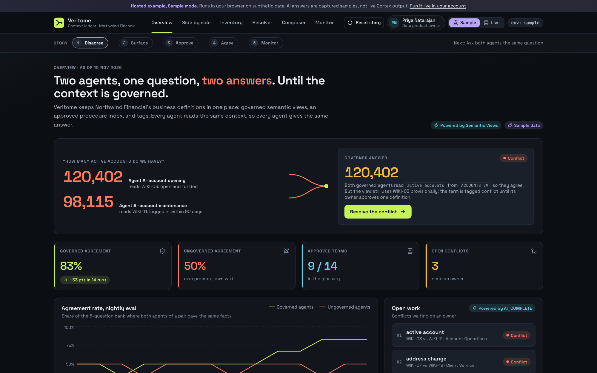
The overview puts the disagreement first: two agents give 120,402 and 98,115 active accounts on this synthetic data set. KPI tiles, the nightly agreement trend, open conflicts and each domain semantic view's tagged status sit underneath.
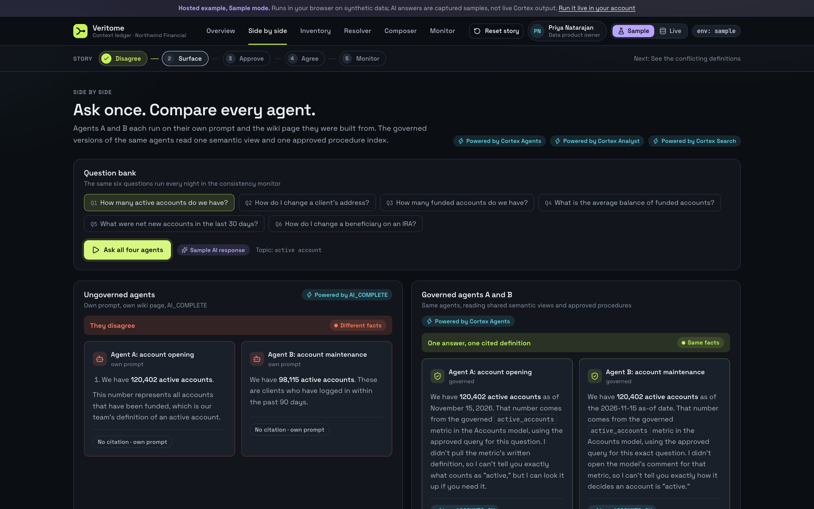
The same question goes to four agents. The two own-prompt agents (AI_COMPLETE) disagree; the governed agents (Cortex Agents with Cortex Analyst) read one metric and cite it. An AI_COMPLETE judge marks each pair.
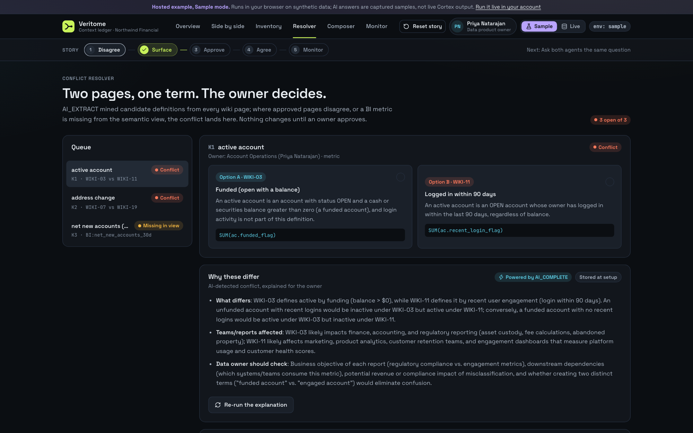
AI_EXTRACT mined a definition from each of 30 wiki pages. Where approved pages disagree, AI_COMPLETE explains the difference for the owner, who picks one. Approval rebuilds the semantic view.
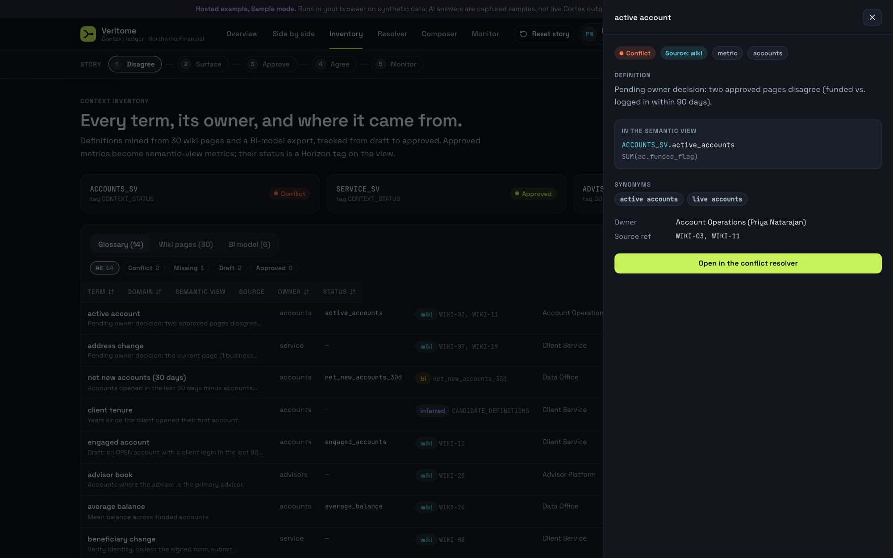
Every term the agents use, with owner, source (wiki, BI or inferred) and status. The drawer shows where a term lives in the semantic view, its expression and synonyms.
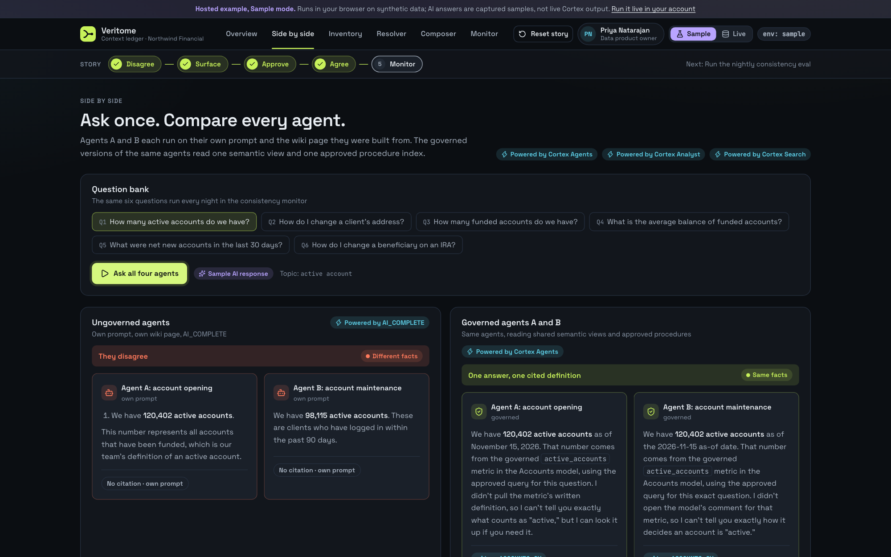
After the owner approves, superseded pages drop out of Cortex Search and the BI metric joins the view. Asked again, the governed agents agree; the own-prompt agents still don't.
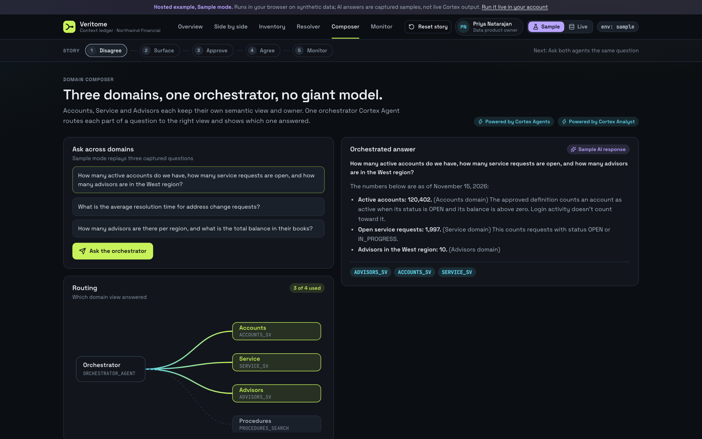
One orchestrator agent routes each part of a question to the Accounts, Service or Advisors semantic view and shows which view answered, without merging them into one model.
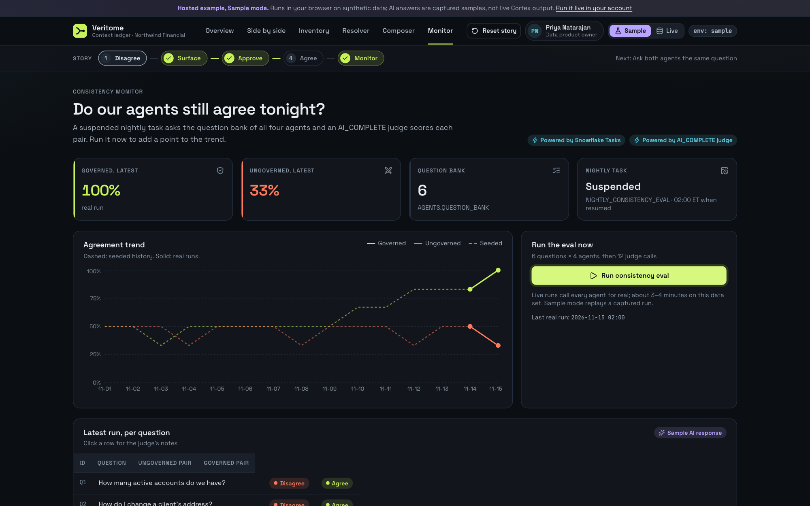
A nightly task asks the question bank of every agent and an AI_COMPLETE judge scores agreement. Dashed points are seeded history on this synthetic data set; solid points are real runs.
On a phone
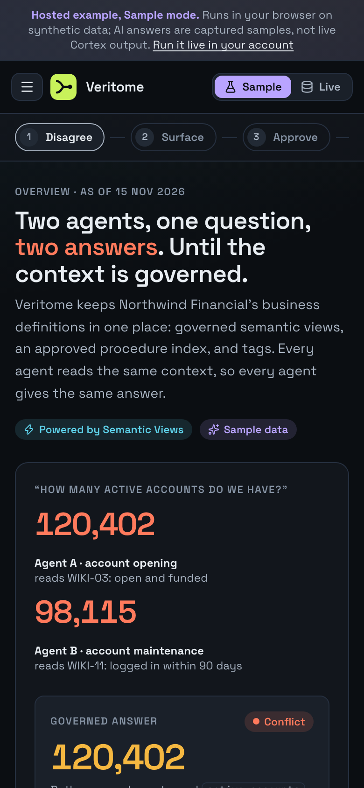
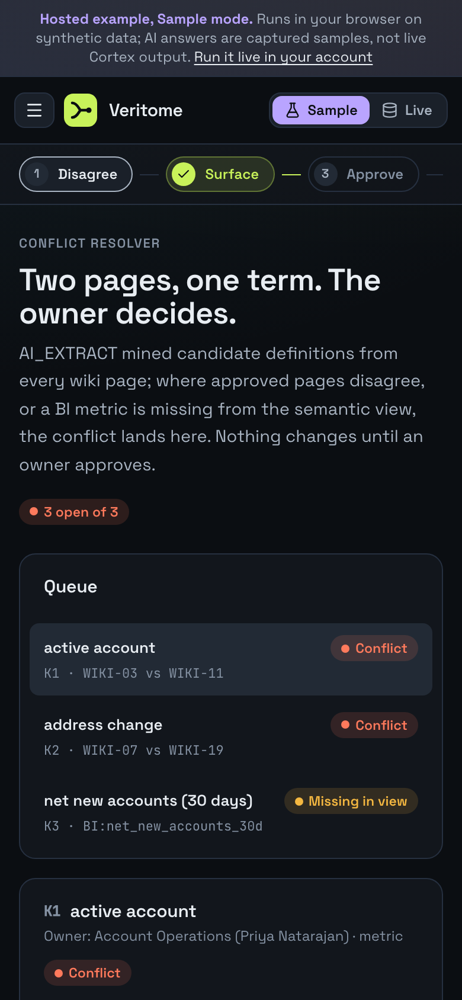
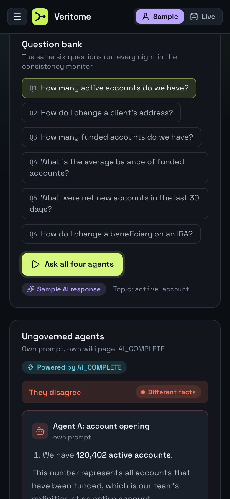
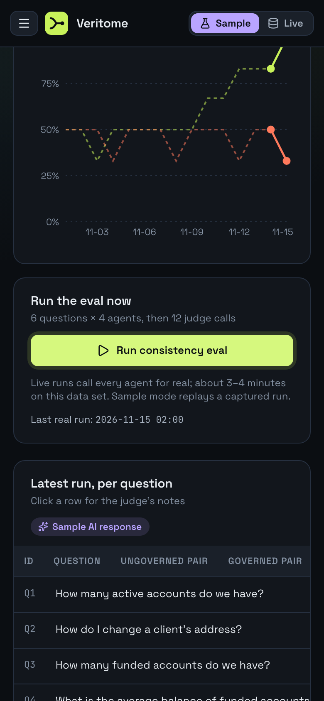
Every capability here ran in Live mode
Tested on a Snowflake Enterprise account in November 2026.
| Step | Snowflake capability | What it does here |
|---|---|---|
| Mine context | AI_EXTRACT | Pulls a term and definition from each of 30 synthetic wiki and procedure pages. |
| Explain conflicts | AI_COMPLETE | Says what differs between conflicting definitions and what the owner should check. |
| Publish context | Semantic views with synonyms and a verified query | A stored procedure compiles approved glossary metrics into ACCOUNTS_SV. Service and Advisors have their own views. |
| Status and ownership | Object tags (Horizon Catalog) | CONTEXT_STATUS and CONTEXT_OWNER on each semantic view. |
| Procedures | Cortex Search | Indexes wiki pages that aren't superseded, so agents only see approved procedures. |
| Agents | Cortex Agents with Cortex Analyst | Two team agents share the same view and index; an orchestrator routes across three domain views. |
| Consistency check | Tasks and AI_COMPLETE | Asks a question bank of every agent and judges whether each pair gives the same facts. |
Data catalogs and BI tools can also be sources of business context. This example imports only a BI export file; it doesn't integrate with any catalog.
Try it, then run it in your account
No account
Open the hosted example, or run it locally with Node.js 20.19 or later:
git clone https://github.com/sfc-gh-ooral/sfguide-governed-context-layer.git
cd sfguide-governed-context-layer
npm install
npm run devYour Snowflake account
- Run
sql/setup.sqlin a Snowsight worksheet. It creates a dedicated database, an XSMALL warehouse and a least-privilege role. - Register a key pair for your user and copy
.env.exampleto.env.local. - Run
npm run devand switch to Live. Each AI panel shows measured latency. - When you're done, run
sql/cleanup.sql.
Requires Enterprise Edition or higher for object tags. The README lists every object, the cost and the full steps.
Customize with Cortex Code
- "Read my wiki export and draft a glossary of candidate terms with source citations. Don't create objects yet."
- "Generate semantic views for my account and service domains from query history, then list overlaps between them."
- "Build an eval question bank and run it against every agent nightly."
What to keep in mind
- Results such as 120,402 versus 98,115 active accounts are planted stories on this synthetic data set.
- The "ungoverned" agents are a baseline: AI_COMPLETE with each team's own prompt, definition and bookmarked page.
- Agreement is judged by an LLM, so borderline answers can change between runs. Earlier monitor points are seeded history.
- Latency depends on your account, region, model and warehouse; the app shows measured times in Live mode only.
This is an illustrative example provided as is. It is not an official Snowflake product, isn't supported by Snowflake Support, and contains no customer data. Apache 2.0 license.